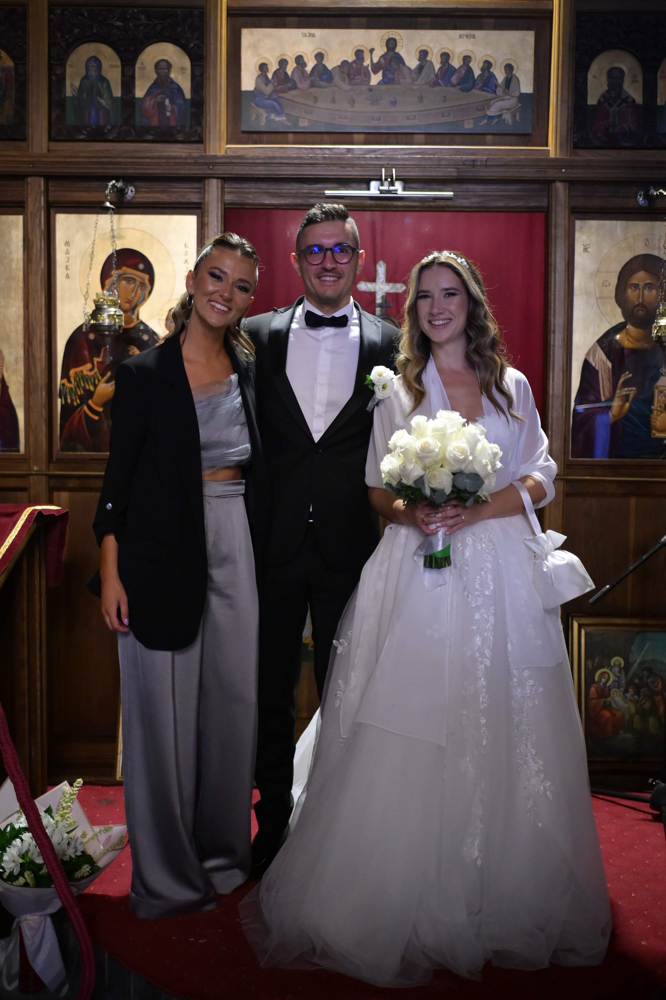
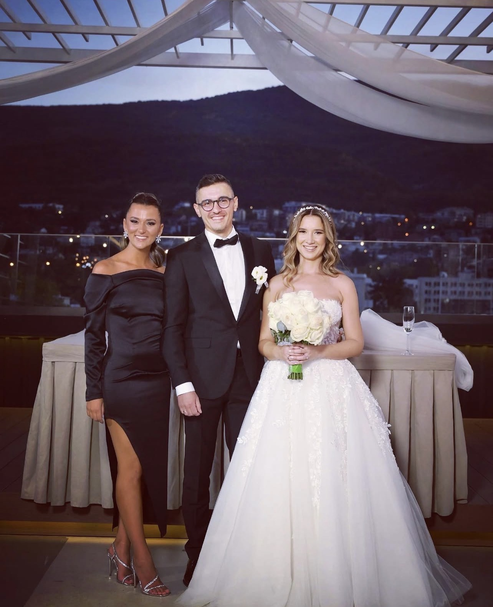
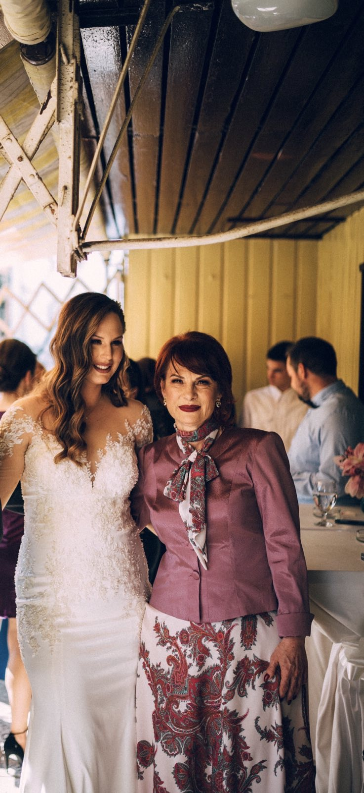
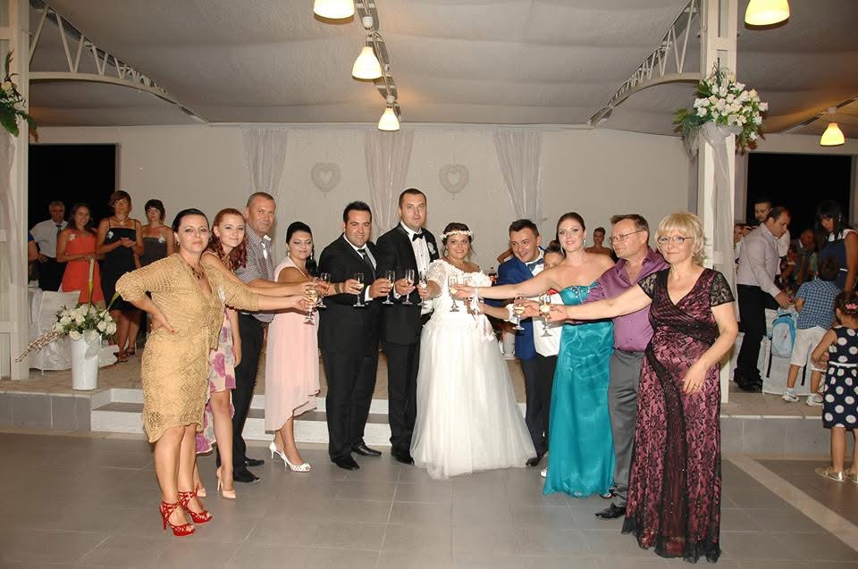
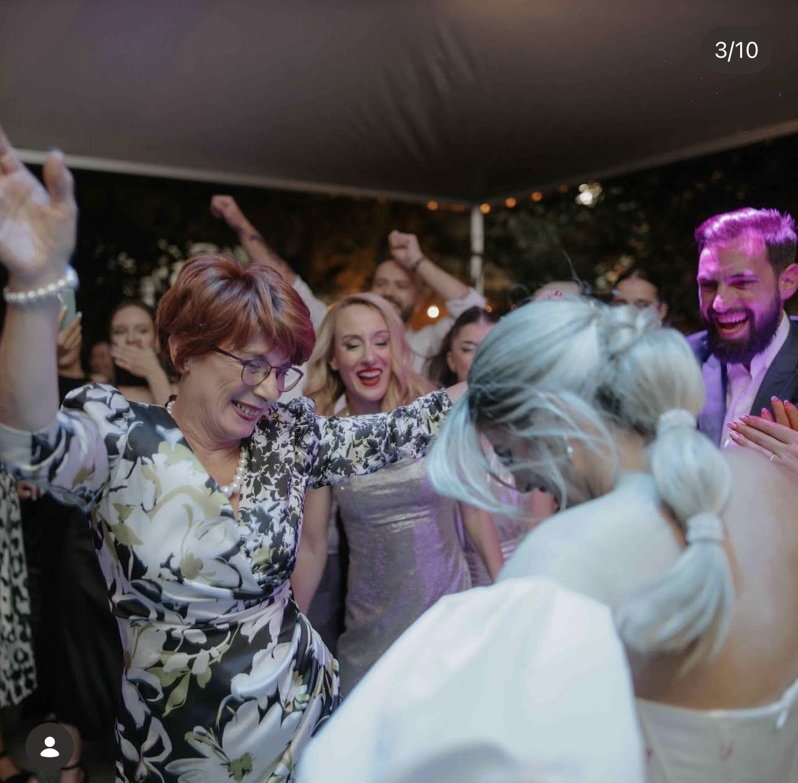
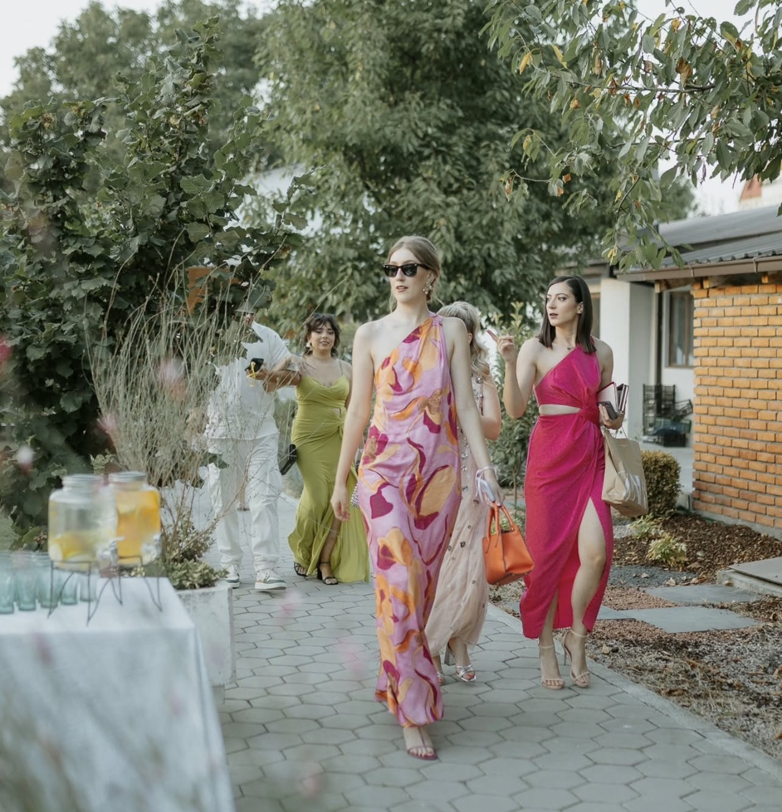
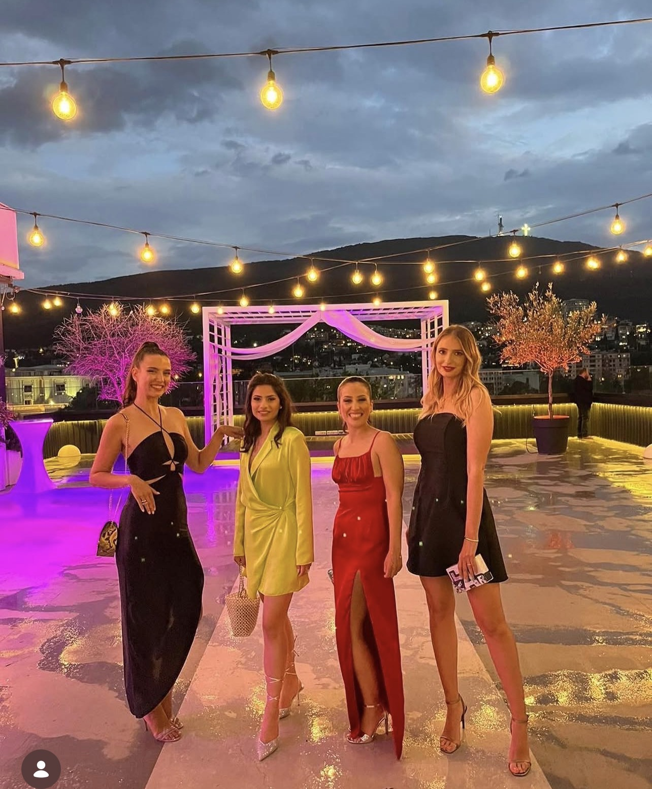
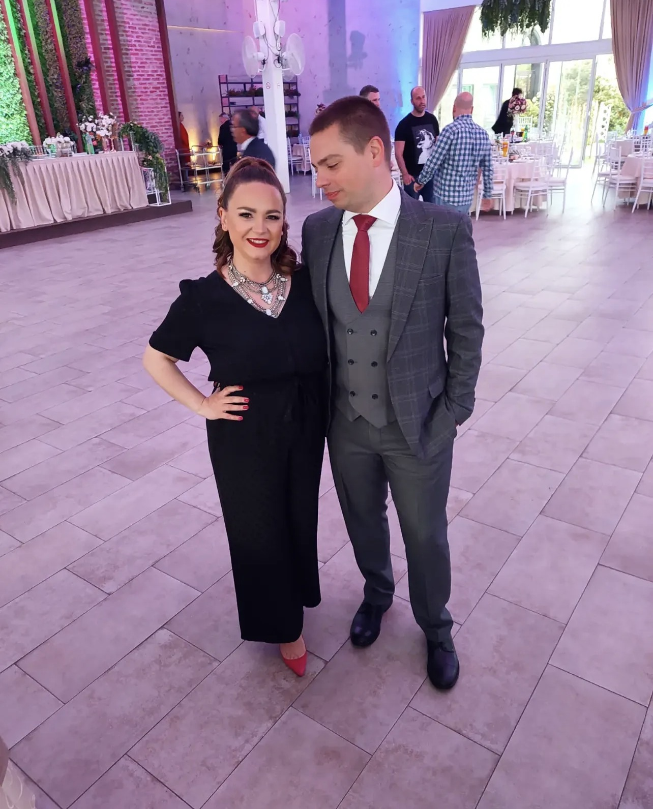

Schedule
We are so excited to celebrate with you. Below is a detailed schedule of our wedding day.
- Our wedding will take place on Friday, July 24th, 2026. We will start with a ceremony at Saint Nicetas (Nikita) Monastery, located on the Skopska Crna Gora Mountain, about 10 miles north of Skopje. The monastery has a small 11th century Christian Orthodox church.
- A shuttle will pick everyone up from the city center at Hotel Park (see Accommodation tab) at 4:15pm. The ride to the monastery takes 30 minutes.
- The ceremony will start at 5:00pm and it will take one hour.
- After the ceremony and some refreshments, the shuttle will bring everyone back to Hotel Park where the reception also will take place.
- Seating of guests starts at 7:30pm.
- The reception will go until 1am. Expect modern music, traditional dances, and a great party.
- A shuttle will take everyone who wishes to join us for an afterparty at a venue close to the monastery.
- A shuttle will take everyone back to the city center after 3am; individual taxis may be arranged as well
- The welcome party venue is next to the monastery.
- A shuttle will pick everyone who wishes to join from the city center at Hotel Park at 4:15pm.
- Dinner will be served at 5:00pm.
- There will be music and some traditional Macedonian dance lessons to prepare everyone for the wedding festivities.
- A shuttle will drop everyone off at back at Hotel Park at 10pm to prepare for the next day.
Travel to Skopje
The main airport is Skopje International Airport. Turkish Airlines offers convenient connections through Istanbul (if coming from the West coast), but other major European hubs have a connection to Skopje. There is also Ohrid St. Paul The Apostle Airport, a smaller airport in Ohrid (2.5 hours away from Skopje), which might make sense for people that want to stay in Ohrid and leave from there.
If planning to extend the stay and travel around Macedonia (highly recommend), perhaps nice to rent a car at the airport. Parking is manageable in the city, and a car would be very convenient if you want to take daily trips to surrounding areas, or even drive to Ohrid (a must-see) and spend a few days there.
The hotels where you have booked accommodation likely have an airport shuttle service to get you to the city center (30-40mins away from airport).
Another options is a shuttle bus that takes passengers from the airport to the city center (the bus ticket is about $4). You can find the timetable here.
There are also taxis that can take you to the city center (cost is about $25-30). If you send us info, we can help arrange those beforehand so taxi waits for you at arrival.
Accommodation
We recommend staying at Hotel Park. It is a 5-star hotel. This is also where the reception will take place and where the shuttles will do pick-up/drop-off to the welcome party, ceremony, and after-party. Unfortunately, there is no code as this hotel does not do group discounts for wedding guests.
- Hotel Park ($80–100/night)
- Hotel Skopje ($45-50/night)
- Hotel City Park ($100-110/night)
- Hotel Marriott Skopje ($180–200/night)
Wedding Attire
We suggest elegant attire suitable for a formal celebration for the reception. If joining us at the church for the ceremony, we recommend covering the shoulders.
Below are some examples of our friends' weddings. Women tend to wear cocktail or formal dresses, while men wear suits or tuxedos (but short-sleeve button-up shirts are perfectly fine, too.). Given that the temperature will be in the 90s, wearing lighter materials is probably a good idea.
       Getting Around Skopje
While there is no Uber/Lyft, there are two convenient taxi applications that you can download to get cabs.
- BeeRide Download on Android or iOS
- Wizi Download on Android or iOS
You can also easily grab a cab on the street, but not recommended.
Restaurants to Try
Skopje offers wonderful Macedonian cuisine. Here are some of our favorites. We will keep adding to this list.
Bars/Coffee to Try
While rakija is the drink to have in Macedonia, beer is great too.
Things to Do
There is plenty to do in Skopje. Here are some suggestions for sightseeing:
- Skopje Old Town: Old Turkish bazaar with small shops, old mosques and churches, good shopping.
- Skopje Fortress (Kale): Byzantine Fortress from 11th century
- Hike to the Millennium Cross: Cable car ride up mount Vodno, view of the city, and big cross
Even more to do if willing to travel outside of Skopje (highly recommend!). Here are some suggestions for longer trips:
- Canyon Matka and Matka Caves: One of the world's deepest underwater caves!
- Ancient Town and Archaeological Site of Stobi: Ancient site and a nice Stobi winery nearby
- St. John the Baptist Monastery: Monastery and church dating back to the year 1020
- Macedonian Ethno Village: Restaurant, hotel, shopping strip in traditional Macedonian style
Places to Visit in Macedonia
If you have extra time, consider visiting Ohrid (one of the world's deepest and oldest natural lakes). We highly recommend extending your trip to visit this lake city. Here is more on Ohrid and must-sees:
- Kaneo: Historic, landmark Orthodox church overlooking Lake Ohrid
- St. Naum Monastery and Ostrovo Restaurant: Eastern Orthodox monastery founded in 905
- Church of Hagia Sophia: Middle Ages Church
- The Bay of Bones: Reconstructed village of stilt houses displaying Bronze & Iron Age items recovered from Lake Ohrid
- Party Beach Bar Gradishte: Three connected beaches with bars and day parties
- Restaurant Kajche: Restaurant by the lake's boardwalk
General Tips and Other Info
- Kids are most welcome at the wedding in Skopje. Kinda like that kid at Bad Bunny's Superbowl wedding, kids have a blast running around, dancing, and eventually falling asleep on chairs under the tables :)
- Macedonians are very hospitable, warm, and friendly people. But on the street or in the market, they don't come off as such. Don't expect too many pleasentries like "please," "excuse me," and "thank you" or smiling at each other when out and about.
- Denars are still the official currency in Macedonia, but euros are widely used as well. Perhaps the best to pay with a card where possible to avoid unfair currency exhange rates at restaurants or markets. There is ApplePay or card terminal almost everywhere.
- Tips have recently become a thing, but definitely not 20% of the check; something symbolic like a euro after coffee/drinks and up to five for big meal is more than enough, and you usually leave it on the table after you've paid for the check on your way out.
- Be aware of pickpocketers (usually kids or teenagers), especially around the main square in the city, the city park, and the old town bazaar.
- Macedonians smoke (a lot) of cigarettes. Most of family and friends will be chain smoking. While many places do not allow smoking inside (including our restaurant), it is not unlikely that you will experience indoor smoking somewhere. Apologies for the second-hand smoke in advance. It's part of the cultural experience, unfortunately.
Contact
You can text or call us on WhatsApp with any questions while in Skopje. There is an app called Airalo that you can use to purchase mobile data compatible with Macedonia's network providers. You can also join our WhatsApp group for questions, concerns, coordinating: